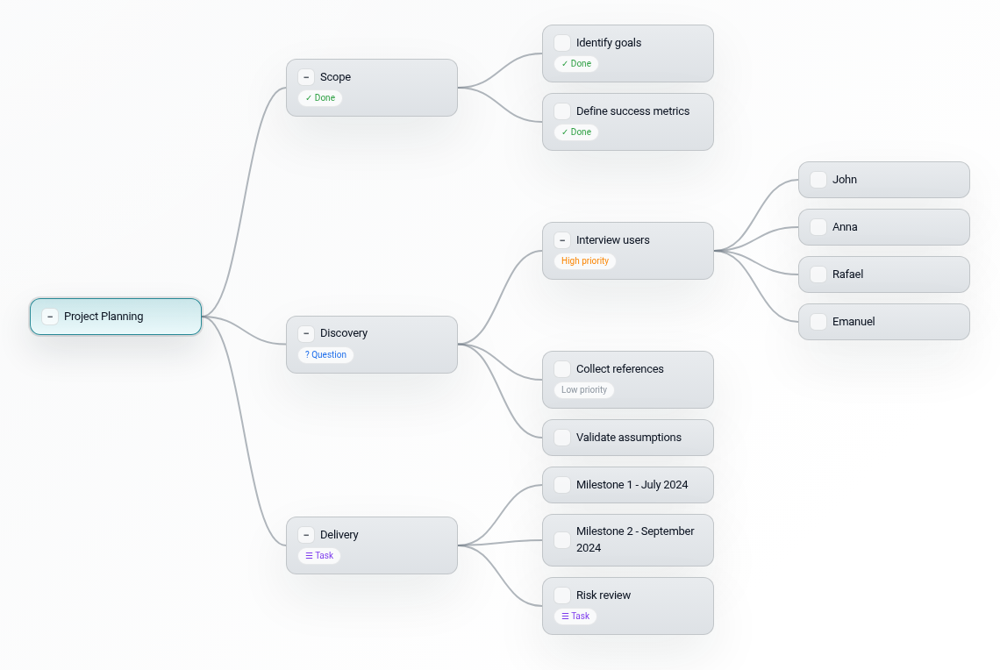
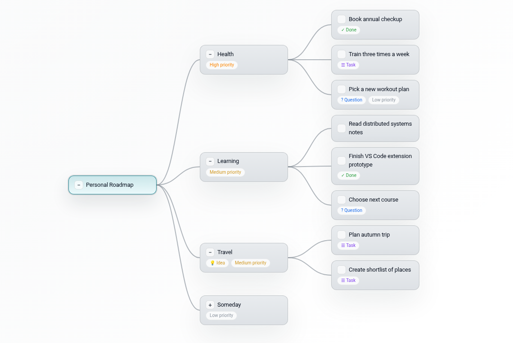

Format
Plain text, one tree
Each mind map lives in a single UTF-8 text file with indentation-based structure, expandable nodes, and ordered flags.
VS Code extension
SwiftMap turns tree-structured notes into a fast visual editor with automatic layout,
inline editing, flags, collapse and reorder controls, and PNG export. The source stays
in a compact .swiftmap file.
Install
Install from the
VS Code Marketplace
or run
code --install-extension ewavelab.swiftmap
, then open any .swiftmap file to start editing.
Format
Each mind map lives in a single UTF-8 text file with indentation-based structure, expandable nodes, and ordered flags.
Editing
Add children and siblings, edit inline, reorder nodes, and move selected branches without leaving the editor.
Output
Preserve the current collapsed state or expand the full map before exporting to PNG.
Privacy
Your maps stay in local .swiftmap files, so you can work offline without
sending content to a cloud service.
Licensing
Use SwiftMap for personal notes or paid work without a usage gate, seat limit, or license wall.
Open source
Inspect the implementation, understand the format, and adapt the extension to your own workflow.
Examples

A compact tree for scope, discovery, delivery, and risk review. Good for meeting notes that need to stay structured.

A longer-lived map that mixes priorities, ideas, and concrete tasks without losing the tree structure.